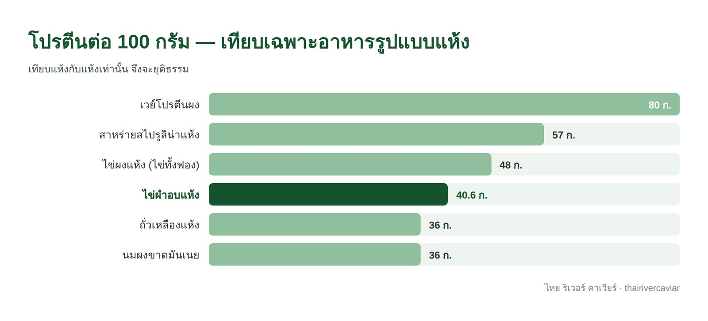
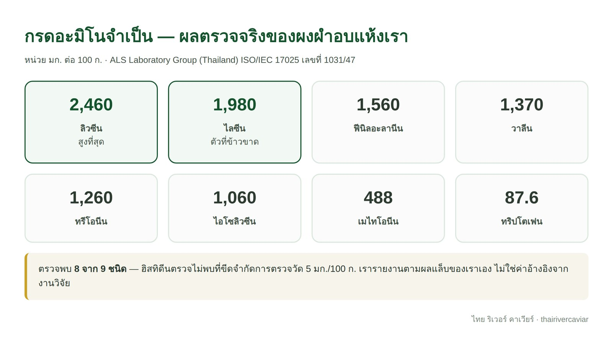
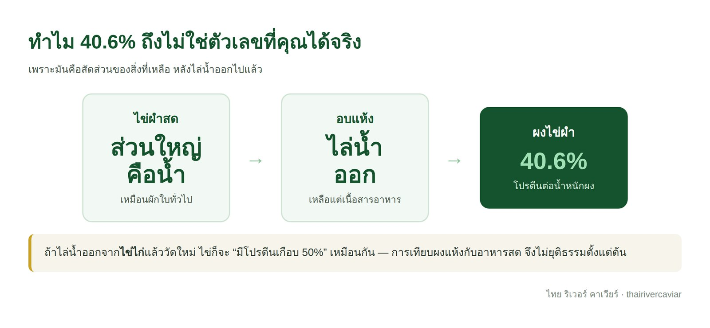
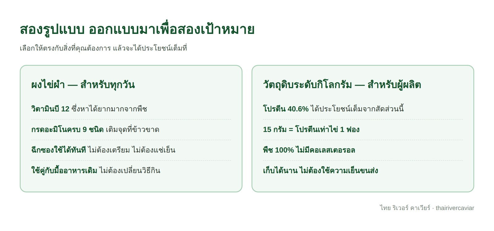

assets/images/journal-09.jpg
ผลตรวจจากห้องปฏิบัติการที่ได้รับการรับรอง ISO/IEC 17025 ระบุว่าไข่ผำอบแห้งของเรามีโปรตีน 40.6 กรัมต่อ 100 กรัม สูงกว่าพืชกินได้เกือบทุกชนิด และมี วิตามินบี 12 สูงถึง 30.8 ไมโครกรัมต่อ 100 กรัม
ตัวเลขนี้ไม่ใช่การประมาณ แต่มาจากรายงานผลวิเคราะห์ของ ALS Laboratory Group (Thailand) เลขที่การรับรอง 1031/47 ซึ่งตรวจตัวอย่างผงผำอบแห้งของเราโดยตรง และสอดคล้องกับงานวิจัยสากลที่รายงานค่าโปรตีนของ Wolffia globosa ไว้ที่ 40–45% ของน้ำหนักแห้ง
บทความนี้จะพาดูสามเรื่อง: คุณภาพโปรตีนซึ่งเป็นจุดแข็งจริงของไข่ผำ วิธีอ่านตัวเลขโภชนาการให้ถูกต้อง และวิธีใช้แต่ละรูปแบบให้ได้ประโยชน์สูงสุด
ในโลกของโปรตีน ตัวเลขเปอร์เซ็นต์บอกแค่ครึ่งเดียว อีกครึ่งที่สำคัญกว่าคือ ร่างกายนำไปใช้ได้จริงแค่ไหน และนี่คือด้านที่ไข่ผำโดดเด่นอย่างชัดเจน
สรุปสั้น ๆ: ไข่ผำไม่ได้แค่ “มีโปรตีนเยอะ” แต่เป็นโปรตีนที่ร่างกายนำไปใช้ได้ดี และทุกตัวเลขในหัวข้อนี้มีรายงานผลแล็บรองรับ ไม่ใช่การกล่าวอ้างลอย ๆ

assets/images/journal-09-drytable.jpg
เทียบกับอาหารแห้งด้วยกัน ไข่ผำอยู่ในกลุ่มบนของพืช สูงกว่าถั่วเหลืองแห้งและนมผง และเมื่อรวมกับคุณภาพกรดอะมิโนที่ครบถ้วน ทำให้มันเป็นหนึ่งในวัตถุดิบพืชที่น่าสนใจที่สุดสำหรับสายพืชล้วน
ร่างกายคนสร้างกรดอะมิโนเองได้หลายตัว แต่มีอยู่ 9 ตัวที่สร้างเองไม่ได้เลย ต้องได้จากอาหารเท่านั้น เรียกว่ากรดอะมิโนจำเป็น และความท้าทายของโปรตีนจากพืชคือมักมีตัวใดตัวหนึ่งต่ำเกินไป
ตัวอย่างที่ชัดที่สุดคือข้าว ซึ่งเป็นอาหารหลักของคนไทย ข้าวมีโปรตีนอยู่บ้างแต่ไลซีนต่ำ ส่วนถั่วมีไลซีนสูงแต่เมไทโอนีนต่ำ นี่คือเหตุผลที่อาหารดั้งเดิมทั่วโลกจับคู่ธัญพืชกับถั่วเสมอ — ข้าวกับถั่วเหลือง ข้าวโพดกับถั่วดำ ขนมปังกับถั่วลันเตา ภูมิปัญญานี้เกิดขึ้นก่อนที่ใครจะรู้จักคำว่ากรดอะมิโนด้วยซ้ำ

assets/images/journal-09-amino.jpg
ไข่ผำน่าสนใจตรงที่ไลซีนเป็นหนึ่งในกรดอะมิโนที่สูงที่สุด — ผลแล็บวัดได้ 1,980 มก./100 ก. ซึ่งบังเอิญเป็นตัวที่ข้าวขาดพอดี พูดง่าย ๆ คือมันเติมเต็มจุดอ่อนของอาหารหลักคนไทยได้ตรงที่สุด โดยไม่ต้องเปลี่ยนมื้ออาหารเลย
ทักษะนี้ใช้ได้กับอาหารทุกชนิด ไม่ใช่แค่ไข่ผำ และจะช่วยให้คุณเปรียบเทียบผลิตภัณฑ์ต่าง ๆ ได้แม่นยำขึ้นมาก
ค่าโภชนาการมักรายงานเป็นสองแบบ — ต่อน้ำหนักแห้ง กับ ต่อน้ำหนักตามสภาพจริง ไข่ผำสดเป็นพืชน้ำจึงมีน้ำเป็นองค์ประกอบหลัก เมื่ออบแห้งจนน้ำระเหยไป สารอาหารที่เหลือจะกระจุกตัว ตัวเลข 40.6% จึงเป็นสัดส่วนของเนื้อสารอาหารหลังไล่น้ำออกแล้ว

assets/images/journal-09-dryfresh.jpg
อาหารทุกชนิดเป็นแบบนี้เหมือนกันหมด ถ้าไล่น้ำออกจากไข่ไก่แล้ววัดใหม่ ไข่ก็จะมีโปรตีนเกือบ 50% เช่นกัน เวลาเทียบผลิตภัณฑ์จึงควรเทียบแห้งกับแห้ง หรือสดกับสด เสมอ
ไข่ผำมีสองรูปแบบที่ออกแบบมาเพื่อวัตถุประสงค์ต่างกัน เลือกให้ตรงกับเป้าหมายแล้วจะได้ประโยชน์เต็มที่

assets/images/journal-09-verdict.jpg
หลักง่าย ๆ คือ ยิ่งใช้ปริมาณมาก ตัวเลข 40.6% ยิ่งมีความหมาย ผู้ผลิตที่ใช้ผงไข่ผำเป็นกิโลกรัมในสูตรผลิตภัณฑ์จะได้ประโยชน์จากสัดส่วนโปรตีนนี้เต็ม ๆ ส่วนผู้บริโภคที่ชงวันละซอง คุณค่าหลักที่ได้คือวิตามินบี 12 และกรดอะมิโนคุณภาพ ซึ่งเป็นสิ่งที่หาได้ยากจากพืช และเป็นเหตุผลที่คนเลือกกินมันทุกวัน
อ่านต่อ: วิตามินบี 12 สำคัญยังไง ใครเสี่ยงขาด และได้จากอะไรบ้าง
จากค่าโปรตีน 40.6% คำนวณได้ว่าผงไข่ผำ ราว 15 กรัม ให้โปรตีนเทียบเท่าไข่ไก่หนึ่งฟอง และนี่คือตัวเลขที่เปลี่ยนเกมสำหรับผู้ผลิตอาหารและอาหารเสริม
เพราะโปรตีน 15 กรัมนั้นมาจากวัตถุดิบที่เป็นพืช 100% ไม่มีคอเลสเตอรอล ไม่ต้องใช้ความเย็นในการขนส่ง เก็บได้นานเป็นเดือน และมีกรดอะมิโนครบเทียบเท่าโปรตีนจากไข่ ซึ่งเป็นชุดคุณสมบัติที่วัตถุดิบโปรตีนจากพืชน้อยชนิดให้ได้พร้อมกัน
สำหรับผู้บริโภคทั่วไป ตัวเลขนี้อธิบายว่าทำไมผลิตภัณฑ์แบบซองชงจึงออกแบบมาเป็นตัวเสริมคุณภาพของมื้ออาหาร มากกว่าตัวเพิ่มปริมาณโปรตีน — สิ่งที่คุณได้ทุกวันคือวิตามินบี 12 และกรดอะมิโนที่ข้าวขาด ส่วนปริมาณโปรตีนหลักยังมาจากอาหารจานหลักตามปกติ
ข้อดีของไข่ผำคือใช้เสริมเข้าไปในมื้อเดิมได้เลย ไม่ต้องรื้อวิธีกิน สามแบบนี้คือวิธีที่ใช้ได้จริงในครัวบ้าน
ต่อน้ำหนักเท่ากันในรูปแห้ง ใช่ — ไข่ผำอบแห้งมีโปรตีน 40.6% ส่วนไข่ไก่สดมีราว 12–13% แต่ถ้าเทียบต่อหนึ่งหน่วยบริโภค ไข่ไก่หนึ่งฟองให้โปรตีนมากกว่า เพราะกินได้ทีละ 50 กรัม ขณะที่ผงไข่ผำใช้ครั้งละ 0.5 กรัม จุดแข็งของไข่ผำจึงอยู่ที่คุณภาพของกรดอะมิโนและวิตามินบี 12 มากกว่าปริมาณโปรตีนต่อมื้อ
ผลแล็บของผงผำอบแห้งเราตรวจพบกรดอะมิโนจำเป็น 8 ใน 9 ชนิด โดยฮิสทิดีนตรวจไม่พบที่ขีดจำกัดการตรวจวัด งานวิจัยสากลรายงานว่า Wolffia globosa มีครบทั้ง 9 ชนิดและมีค่า PDCAAS 89% เราจึงเลือกอ้างอิงเฉพาะผลตรวจของเราเอง และไม่ใช้คำว่า “โปรตีนสมบูรณ์” ซึ่งมีนิยามต่างกันไปตามมาตรฐานของแต่ละประเทศ
ต่อน้ำหนักเท่ากัน ผงแห้งมีมากกว่าเพราะน้ำถูกไล่ออกไปแล้ว แต่ในทางปฏิบัติคนกินไข่ผำสดครั้งละ 1–2 ช้อนโต๊ะ ซึ่งมากกว่าผงหนึ่งซองหลายเท่า ปริมาณโปรตีนที่ได้จริงต่อมื้อจึงมักใกล้เคียงหรือมากกว่า
ข้าวมีโปรตีนอยู่บ้างแต่ไลซีนต่ำ ส่วนไข่ผำมีไลซีนเป็นกรดอะมิโนเด่น การกินคู่กันจึงช่วยเติมเต็มกรดอะมิโนที่ข้าวขาด เป็นหลักการเดียวกับที่อาหารดั้งเดิมทั่วโลกจับคู่ธัญพืชกับถั่วมาตลอด
ตัวเลขโภชนาการทั้งหมดในบทความนี้จะมีความหมายก็ต่อเมื่อวัตถุดิบมีคุณภาพคงที่ทุกล็อต และความคงที่นั้นเกิดจากการควบคุมตั้งแต่ต้นน้ำ ไม่ใช่จากการตรวจปลายทางอย่างเดียว
ที่ฟาร์มของเรา ไข่ผำเพาะเลี้ยงในระบบปิดที่ควบคุมน้ำเองทั้งหมด ไม่ได้ช้อนจากแหล่งน้ำธรรมชาติ ส่งตรวจเชื้ออีโคไลกับห้องปฏิบัติการทุกเดือน และผ่านการคัดสายพันธุ์กว่าหนึ่งปีจนได้วิตามินบี 12 สูงกว่าไข่ผำทั่วไป 2.5 เท่า เพราะเราส่งออกไปญี่ปุ่นและอเมริกาเป็นหลัก มาตรฐานปลายทางจึงกำหนดวิธีทำงานของเราตั้งแต่ต้นทาง
ไทย ริเวอร์ คาเวียร์ เพาะเลี้ยงไข่ผำเองในระบบปิด มีทั้งแบบสด ผงอบแห้ง 100% และเยลลี่พร้อมทาน สั่งซื้อปลีกได้ทันที ส่วนผู้ซื้อเชิงธุรกิจขอตัวอย่าง 20 กรัมฟรีไปส่งตรวจแล็บเองได้